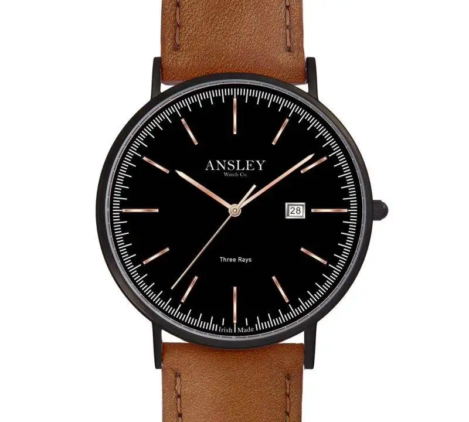

At Ansley Watch Co, we are committed to traditional watchmaking without compromise.
Our exquisite collection of watches celebrates the rich heritage of Ireland and makes for an ideal gift.
Meticulously crafted whilst paying homage to the essence of Irish culture, each timepiece is a unique blend of contemporary style and
traditional design.
Using only the finest materials and traditional techniques, our watches are built to last and are a symbol of Irish pride.
Explore our collection today and own a piece of Irish heritage that will be treasured for generations to come.
Army 316
€149.00
36mm Silver Case/Black Dial/Silver hands/markings
18mm Black Canvas Strap/Silver Buckle
Sapphire Glass
Sapphire Glass
Presented in attractive gift box
Assembled in Ireland
Tri Gá Gréine – 426
€249.00
42mm sapphire glass
Ultra thin 7.5mm case thickness
3 ATM
Citizen GM10 movement
Date function
Strap can be interchanged
Additional straps available to purchase
Symbol for equality engraved on case back
Assembled in Ireland
Three Rays Collection
€225.00
36mm sapphire glass
Ultra thin 7.5mm case thickness
3 ATM
Citizen GM10 movement
Date function
Strap can be interchanged
Strap can be interchanged
Additional straps available to purchase
Ancient Celtic symbol for equality engraved on case back
Assembled in Ireland